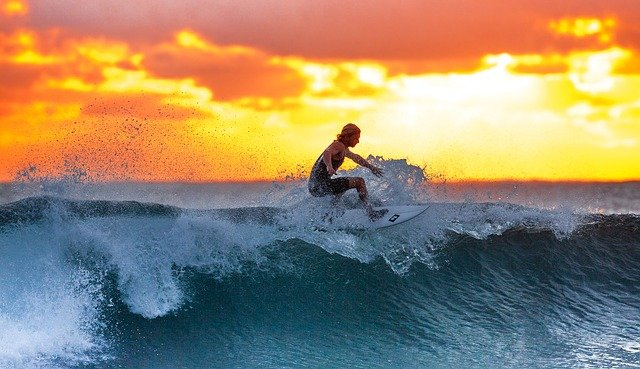

What is Longboarding?
Many people are familiar with skateboarding, but may not be so familiar with longboarding. Longboarding is a sport that is similar skateboarding but with some differences in the shape, speed, price, and what you can do with them. Longboards can come in a wide variety of shapes and sizes. Typically, longboards are 38-52 inches long compared to skateboards which are usually 28 to 34 inches. They are also faster than skateboards because it has larger and softer wheels which also adds stability. This also makes it pricier because the parts(bearings, and truck pieces) are much more important in longboards. Longboards are the best for freeriding, dancing, and freestyles while skateboards excels in flip trcks and transition skating.
History of Longboards
Longboards originated in Hawaii in the 1950s when surfers began customizing their skateboards giving them longer desk and larger wheels to mimic the rolling motion of waves and balance required by surfing. They first gained popularity in California in the 1970s then soon died off due to the threat of lawsuits and high insurance costs. Longboards were brought back in the 1990s after the invention of reverse kingpin trucks which made longboards easier to carve and turn. This invention led to an explosion of broader longboarding styles such as freeriding, freestyles and dancing. Theexplosion of these new longboarding styles soon evolved to become a serious sport.
